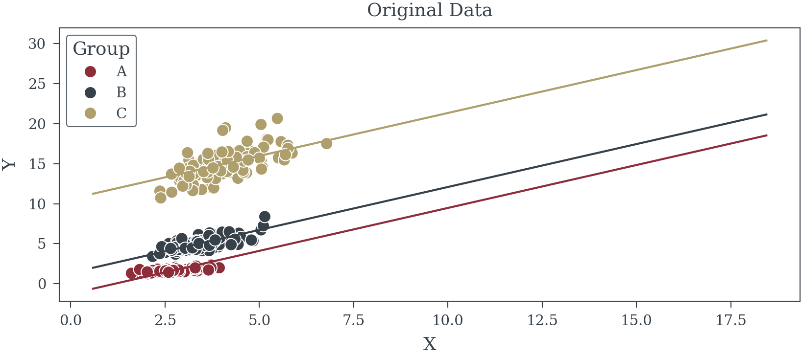
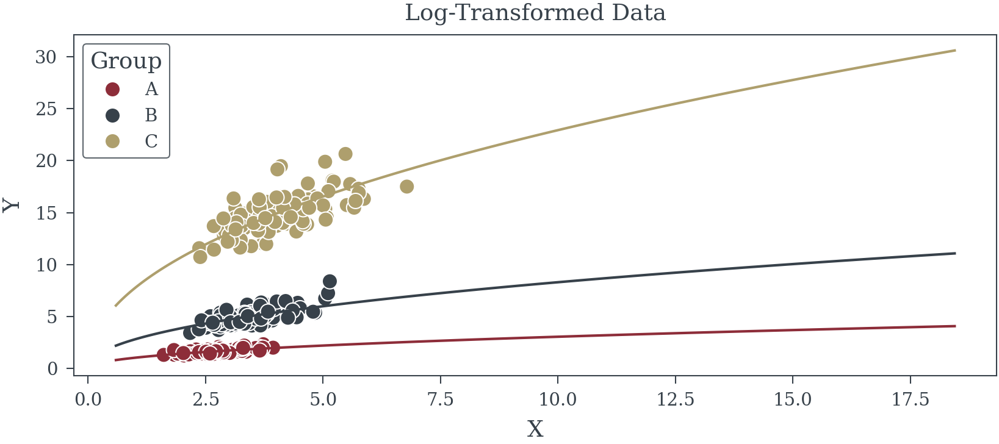
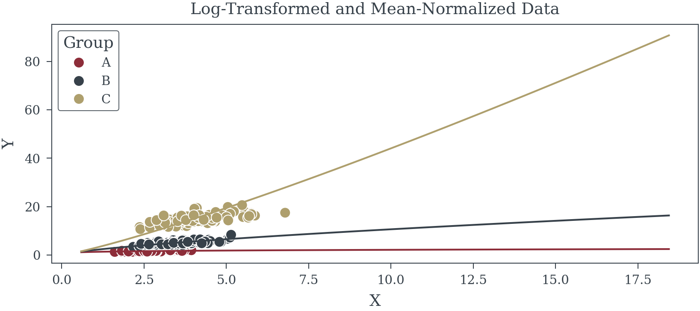
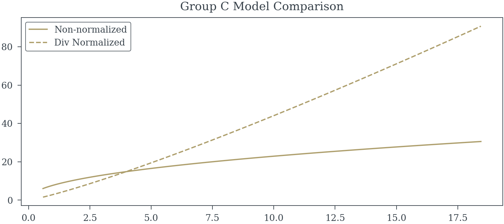

A Comparison of Normalization Techniques for Group Level Data
How to handle panel data
perform_fixed_effects
perform_fixed_effects (df:pandas.core.frame.DataFrame, dependent_var:str, independent_var:str, group:None|str=None)
| Type | Default | Details | |
|---|---|---|---|
| df | DataFrame | Data | |
| dependent_var | str | Dependent Variable Name | |
| independent_var | str | Independent Variable Name | |
| group | None | str | None | Grouping Name |
model_original = perform_fixed_effects(df, 'Y', 'X', group="Group") OLS Regression Results
==============================================================================
Dep. Variable: Y R-squared: 0.975
Model: OLS Adj. R-squared: 0.974
Method: Least Squares F-statistic: 321.0
Date: Wed, 20 Nov 2024 Prob (F-statistic): 0.00310
Time: 23:41:40 Log-Likelihood: -400.16
No. Observations: 300 AIC: 808.3
Df Residuals: 296 BIC: 823.1
Df Model: 3
Covariance Type: cluster
==============================================================================
coef std err z P>|z| [0.025 0.975]
------------------------------------------------------------------------------
const -1.2542 0.763 -1.644 0.100 -2.749 0.241
X 1.0725 0.282 3.805 0.000 0.520 1.625
B 2.6161 0.199 13.124 0.000 2.225 3.007
C 11.8617 0.382 31.044 0.000 11.113 12.611
==============================================================================
Omnibus: 74.420 Durbin-Watson: 2.001
Prob(Omnibus): 0.000 Jarque-Bera (JB): 379.356
Skew: 0.904 Prob(JB): 4.21e-83
Kurtosis: 8.204 Cond. No. 18.2
==============================================================================
Notes:
[1] Standard Errors are robust to cluster correlation (cluster)model_log = perform_fixed_effects(df, 'log_Y', 'log_X', "Group") OLS Regression Results
==============================================================================
Dep. Variable: log_Y R-squared: 0.988
Model: OLS Adj. R-squared: 0.988
Method: Least Squares F-statistic: 49.98
Date: Wed, 20 Nov 2024 Prob (F-statistic): 0.0194
Time: 23:51:17 Log-Likelihood: 269.61
No. Observations: 300 AIC: -531.2
Df Residuals: 296 BIC: -516.4
Df Model: 3
Covariance Type: cluster
==============================================================================
coef std err z P>|z| [0.025 0.975]
------------------------------------------------------------------------------
const 0.0305 0.065 0.470 0.639 -0.097 0.158
log_X 0.4711 0.066 7.099 0.000 0.341 0.601
B 1.0007 0.015 64.917 0.000 0.970 1.031
C 2.0174 0.027 75.848 0.000 1.965 2.070
==============================================================================
Omnibus: 5.308 Durbin-Watson: 1.950
Prob(Omnibus): 0.070 Jarque-Bera (JB): 5.394
Skew: 0.325 Prob(JB): 0.0674
Kurtosis: 2.905 Cond. No. 12.9
==============================================================================
Notes:
[1] Standard Errors are robust to cluster correlation (cluster)model_log_norm = perform_fixed_effects(df, 'log_Y_norm', 'log_X', 'Group') OLS Regression Results
==============================================================================
Dep. Variable: log_Y_norm R-squared: 0.284
Model: OLS Adj. R-squared: 0.277
Method: Least Squares F-statistic: 4.051
Date: Wed, 20 Nov 2024 Prob (F-statistic): 0.182
Time: 23:53:36 Log-Likelihood: 183.09
No. Observations: 300 AIC: -358.2
Df Residuals: 296 BIC: -343.4
Df Model: 3
Covariance Type: cluster
==============================================================================
coef std err z P>|z| [0.025 0.975]
------------------------------------------------------------------------------
const 0.5718 0.213 2.688 0.007 0.155 0.989
log_X 0.4372 0.217 2.013 0.044 0.011 0.863
B -0.1016 0.050 -2.013 0.044 -0.200 -0.003
C -0.1752 0.087 -2.013 0.044 -0.346 -0.005
==============================================================================
Omnibus: 30.117 Durbin-Watson: 2.240
Prob(Omnibus): 0.000 Jarque-Bera (JB): 106.155
Skew: 0.321 Prob(JB): 8.89e-24
Kurtosis: 5.843 Cond. No. 12.9
==============================================================================
Notes:
[1] Standard Errors are robust to cluster correlation (cluster)


Reuse
Citation
BibTeX citation:
@online{reda,
author = {Reda, Matthew},
title = {A {Comparison} of {Normalization} {Techniques} for {Group}
{Level} {Data}},
url = {https://redam94.github.io/common_regression_issues/group_level_normalization.html},
langid = {en}
}
For attribution, please cite this work as:
Reda, Matthew. n.d. “A Comparison of Normalization Techniques for
Group Level Data.” https://redam94.github.io/common_regression_issues/group_level_normalization.html.